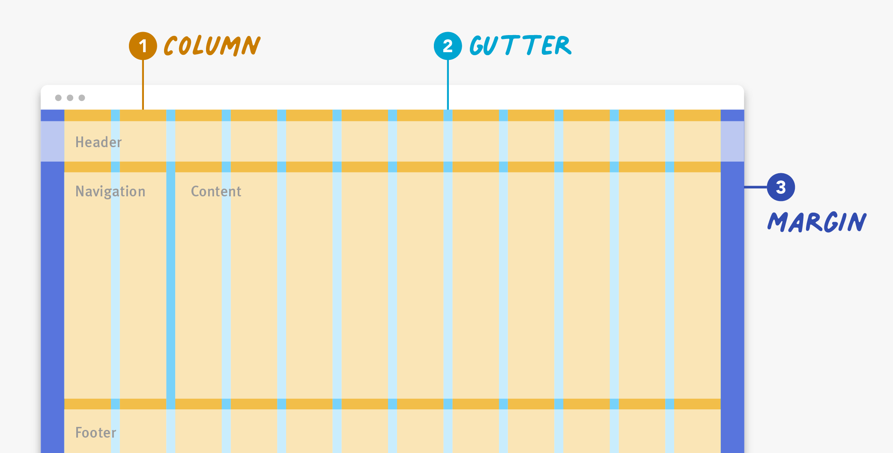

Responsive vs Adaptive
Concevoir une UI web adaptée à tous les écrans:
- Adaptive Design
- Plusieurs versions de la page pour différentes tailles d'écran.
- Le système identifie le type d'écran et charge la version appropriée (côté serveur).
- Basé sur des points de ruptures qui définissent les différentes versions.
- Responsive Design
- Une seule version de la page qui s'adapte à la taille de l'écran (côté client).
- Utilise des unités/grilles/médias flexibles.
- Basé sur des outils CSS qui appliquent des styles différents selon l'écran.
(démonstration: http://g-mops.net/epica_saitama/epica_layout/index_adaptive.html)
Viewport
Zone dans laquelle est affiché un contenu. Désigne le plus souvent l’intérieur de la fenêtre d’un navigateur web mais ce peut aussi être un webview (e.g. dans les applications mobiles).
- Responsive Web Design = s'adapter automatiquement à la largeur du viewport
- Le navigateur (ou webview) ajuste le rendu en s'appuyant sur CSS
Viewport
- HTML s'adapte déjà à la taille du viewport (cf. flux normal)
- Souvent insuffisant pour les écrans très larges ou très étroits
- Exemple: Fluid layout des années 2000
Balise <meta name="viewport" ...>
- Les navigateurs mobiles définissent la largeur du viewport à 980 pixels (et non à la largeur du terminal)
- Les sites non optimisés pour le mobile s'affichent comme des versions dé-zoomées du site desktop
- Pour corriger ce comportement:
<meta name="viewport" content="width=device-width, initial-scale=1">
Responsive Web Design
- RWD = techniques pour adapter automatiquement la mise en page aux dimensions du viewport
- Initialement (2010):
- Media Queries: styles alternatifs en fonction des caractéristiques viewport
- Grilles flexibles: agencement en grille dans laquelle les éléments sont positionnés
- Images flexibles: dimensions des images qui s'ajustent à l'espace disponible
- Aujourd'hui, bien plus: flexbox/grid, orientation, taille du pointeur, viewport segments, etc.
Media queries
- Mécanisme CSS pour appliquer des styles conditionnels
- Exemple: styles différents pour l'impression:
nav, footer {
background-color: lightgray;
}
@media print {
nav, footer { display: none; }
}
<link rel="stylesheet" media="screen" href="screen.css" type="text/css">
<link rel="stylesheet" media="print" href="print.css" type="text/css">
Type de media possibles
screen: pour les écransprint: pour l'impressionspeech: pour les synthétiseurs vocauxall: pour tous les appareils (défaut)projection: vidéo-projecteur (deprecated)tv: téléviseurs (deprecated)handheld: appareils portables (deprecated)braille: afficheurs braille (deprecated)embossed: imprimantes braille (deprecated)tty: terminaux à caractères (deprecated)
Media features
- Pour plus de précision, on peut ajouter des conditions sur les caractéristiques des appareils
@media type and (feature) {
/* styles */
}
<link rel="stylesheet" href="specific.css" media="type and (feature)">
@media all and (orientation: portrait) {. /* ici, "all and" est optionnel */
aside { display: none; }
}
Media features les plus utilisés
min-width,max-width: pour cibler la largeur minimale ou maximale du viewport
@media all and (min-width: 600px) {
/* Styles pour les écrans d'au moins 600px de large */
}
@media all and (max-width: 599px) {
/* Styles pour les écrans de moins de 599px de large */
}
width:
@media all and (width >= 600px) {
/* Styles pour les écrans de 600px de large */
}
heightMedia features les plus utilisés
- Le conditions peuvent être combinées:
@media (min-width: 600px) and (max-width: 900px) {
/* Styles pour les écrans entre 600px et 900px de large */
}
@media (600px <= width <= 900px) {
/* Styles pour les écrans entre 600px et 900px de large */
}
@media not ((width >= 30em) or (orientation: landscape)) {
/* ces styles ne seront pas appliqués si le viewport est plus large que 30em, ou si l'orientation est paysage */
}
Media features les plus utilisés
- Si l'utilisateur dispose d'un curseur de souris:
@media screen and (hover: hover) {
/* styles appliqués si l'utilisateur peut survoler les éléments avec une souris */
}
@media screen and (pointer: coarse) { /* autre valeur: fine ou none */
/* le pointeur est grossier (doigt) */
}
@media screen and (min-aspect-ratio: 4/3) {
/* écran de ratio 4/3 = 1.333 et plus */
}
@media screen and (min-resolution: 300dpi) {
/* écran de résolution 300dpi et plus */
}
Points de ruptures
- Souvent utilisés pour définir des règles spécifiques à des points de rupture (breakpoints)
- Style génériques en premier, puis media queries pour les règles spécifiques
- Cibler les viewport les plus petits en premiers:
/* styles génériques */
@media screen and (min-width: 576px) { ... }
@media screen and (min-width: 768px) { ... }
@media screen and (min-width: 992px) { ... }
@media screen and (min-width: 1200px) { ... }
@media screen and (min-width: 1400px) { ... }
Flexible layout
Fixed layout: la mise en page est basée sur des boîtes (cf. box model du chapitre précédent) de dimensions fixes, i.e. en pixels

Flexible layout
Flexible layout (ou Fluid ou Liquid): les boîtes ont des dimensions et positions spécifiées dans une unité de mesure adaptative (e.g. pourcentage)

Unité de mesure flexible
%: pourcentage
.container {
width: 100%; /* toute la largeur du conteneur */
max-width: 1200px; /* pas plus large que 1200px */
}
nav {
width: 87.5%; /* 87.5% de la largeur du conteneur */
}
em: unité relative à la taille de la police du conteneur
/* si police du conteneur de 16px */
h1 {
font-size: 1.5em; /* taille de 16 x 1.5 = 24 px */
}
Unité de mesure flexible
rem: unité relative à la taille de la police de l'élément racine (<html>)vw: unité relative à la largeur de la fenêtre d'affichage (viewport width)vh: unité relative à la hauteur de la fenêtre d'affichage (viewport height)vmin: unité relative à la plus petite dimension de la fenêtre d'affichage (viewport minimum)vmax: unité relative à la plus grande dimension de la fenêtre d'affichage (viewport maximum)
Convertisseur px/em: https://www.w3schools.com/cssref/css_pxtoemconversion.php
Exemple
Agencement en deux colonnes, avec un conteneur incluant une section et un encadré côte à côte
<!-- en HTML -->
<body>
<main class="container">
<section> ... </section>
<aside> ... </aside>
</main>
</body>
Exemple
Agencement en deux colonnes, avec un conteneur incluant une section et un encadré côte à côte
/* Fixed layout en CSS */
.container {
width: 538px;
}
section, aside {
margin: 10px;
}
section {
float: left;
width: 340px;
}
aside {
float: right;
width: 158px;
}
Exemple
Pour calculer les dimensions en %: largeur élément ÷ largeur conteneur
/* Fluid layout en CSS */
.container {
width: 538px;
}
section, aside {
margin: 1.858736059%; /* 10px / 538px = .018587361 */
}
section {
float: left;
width: 63.197026%; /* 340px / 538px = .63197026 */
}
aside {
float: right;
width: 29.3680297%; /* 158px / 538px = .293680297 */
}
Exemple
Exemple tiré de https://learn.shayhowe.com/advanced-html-css/responsive-web-design/
Mise en page en grille flexible
- Basé sur ce principe, le plus courant est de s'appuyer sur une mise en page en grille flexible
- La largeur du viewport est divisé en colonnes de même largeur 
Mise en page en grille flexible
- La largeur d'un élément est définie en "nombre de colonnes"
- Classes CSS pré-définies pour rendre les éléments flexibles
.col-1 {width: 8.33%;}
.col-2 {width: 16.66%;}
.col-3 {width: 25%;}
.col-4 {width: 33.33%;}
.col-5 {width: 41.66%;}
.col-6 {width: 50%;}
.col-7 {width: 58.33%;}
.col-8 {width: 66.66%;}
.col-9 {width: 75%;}
.col-10 {width: 83.33%;}
.col-11 {width: 91.66%;}
.col-12 {width: 100%;}
Mise en page en grille flexible
- La largeur réelle comprend les espacements et bordures:
- Compromet la subdivision en colonnes
- Pour corriger:
box-sizing: border-box;. Lespaddingetbordersont inclus danswidth - Pas le cas des marges qui doivent être mises à zéro ou prises en compte pour le découpage en colonnes
- Problème si répandus que beaucoup de développeurs utilisent:
width + margin + padding + border = largeur réelle
* {
box-sizing: border-box;
}
Mise en page en grille flexible
- Les éléments doivent être flottants
[class*="col-"] {
float: left;
}
div
<div class="row">
<div class="col-3">...</div> <!-- 25% -->
<div class="col-9">...</div> <!-- 75% -->
</div>
.row::after {
content: "";
clear: both;
}
Principe mise en oeuvre dans les frameworks CSS (e.g. Bootstrap)
Nouveaux modules CSS d'agencements
- Introduit en 2017
- Permettent de créer des mises en page flexibles sans avoir à recourir aux flottants
- Deux modules principaux:
Flexbox(Flexible Box Layout): pour agencer des éléments dans une seule dimension (ligne ou colonne)Grid(CSS Grid Layout): pour agencer des éléments dans deux dimensions (lignes et colonnes)Gridpour les mises en pages "macro",Flexboxpour les mises en pages "micro"- grid system de Bootstrap maintenant basé sur
Flexbox
Nouveaux modules CSS d'agencements
- Principe général: plusieurs propriétés CSS pour contrôler un conteneur et ses items
- Le conteneur a la capacité de modifier les dimensions et l’agencement de ses items
- Les items peuvent aussi avoir des propriétés spécifiques pour s’adapter au conteneur
- On définit le conteneur via la propriété
display
.container {
display: flex; /* ou grid */
}
.item {
flex-grow: 1; /* pour flexbox */
grid-column: span 2; /* pour grid */
}
Flexbox container
- Agencement en une dimension (ligne ou colonne)
- 4 directions possibles:
.container {
display: flex;
flex-direction: row; /* row | row-reverse | column | column-reverse */
}
- ligne (par défaut, de gauche à droite)
- ligne inversée (de droite à gauche)
- colonne (de haut en bas)
- colonne inversée (de bas en haut)
Flexbox model

- 2 axes: principal (main) et transversal (cross)
- 2 extrémités: début (start) et fin (end)
Propriétés du conteneur
flex-wrap: nowrap | wrap | wrap-reverse;- Si les items sont distribués sur une ou plusieurs lignes
Propriétés du conteneur
justify-content: flex-start | flex-end | center | space-between | space-around | space-evenly;- Comment distribuer l’espace autour des items selon l’axe principal
Propriétés du conteneur
align-items: flex-start | flex-end | center | baseline | stretch;- Comment aligner les items selon l’axe transversal


Propriétés du conteneur
align-content: flex-start | flex-end | center | space-between | space-around | stretch;- Comment distribuer l’espace entre les lignes/colonnes selon l’axe transversal


Propriétés des items
order: <entier>;- La position de l’item. Par défaut, l’ordre est celui dans le HTML
Propriétés des items
flex-grow: <entier>;--flex-shrink: <entier>;- Facteurs d’agrandissements/rétrécissement des items, quand le conteneur est redimensionné

Propriétés des items
- et d'autres...
Tous les détails: https://css-tricks.com/snippets/css/a-guide-to-flexbox/
Module Grid
- Agencement en tableau 2D
.container {
display: grid;
grid-template-rows: auto auto auto; /* 3 lignes de hauteur automatique */
grid-template-columns: auto auto auto auto; /* 4 colonnes de largeur automatique */
grid-gap: 10px; /* espacement de 10px entre les lignes et colonnes */
}
.item {
grid-column: 3 / span 2; /* commence à la colonne 3 et s'étend sur 2 colonnes */
grid-row: 3 / 4; /* commence à la 3ème ligne et finit à la 4ème */
}
Tous les détails: https://css-tricks.com/snippets/css/complete-guide-grid/